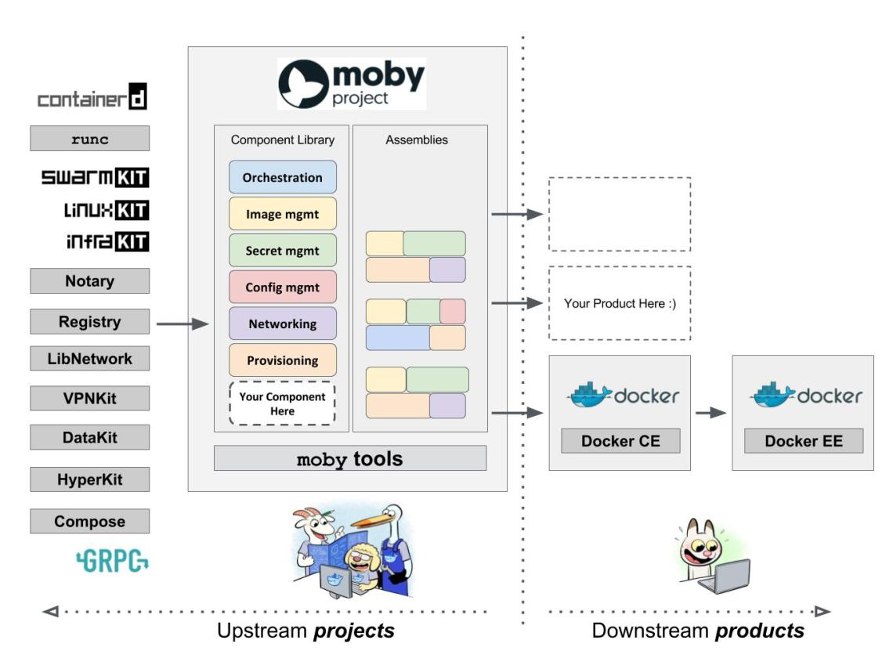

01 导读：Docker 核心技术预览
2017年3月 Docker 官方发布消息，原 SAP 高管 Steve Singh 接任 Ben Golub 成为新的首席执行官。这是一个特别时期，经过四年的长足发展，Docker 已经成为一家高速发展的云计算开源技术领导品牌，但是其商业模式至今不太明朗。
Steve 的商业经验至少可以说是当前最合适成为 Docker 领军人物的人选，在距离 IPO 上市近在咫尺的路上，本文期望通过深入预览 Docker 核心技术的概念，让大家全面了解 Docker 技术对云计算发展的深远意义。
背景
由 PaaS 到 Container
2013年2月，前 Gluster 的 CEO，Ben Golub 和 dotCloud 的 CEO，Solomon Hykes 坐在一起聊天时，Solomon 谈到想把 dotCloud 内部使用的 Container 容器技术开源出来，并围绕这项技术开一家新公司并提供商业技术支持。
这一想法源于28岁的 Solomon 在研发 dotCloud 的 PaaS 云平台时发现的机会。通过使用 Ubuntu 社区的 LXC（Linux Container）技术可以便捷地构建应用环境镜像并发布到主机平台运行。这种容器技术可以把开发者从日常部署升级应用环境配置的繁杂工作中解脱出来。事实上，自从进入 DevOps 理念之后，开发团队迫切需要从各种混乱的部署环境中解脱出来。他们越深入交谈，越觉得这是一次云计算技术的变革。不久之后在2013年3月 Docker 0.1发布，从此拉开了基于云计算容器技术的变革序幕。
Docker 简介
Docker 是 Docker Inc 公司开源的一项基于 Ubuntu LXC 技术之上构建的应用打包运行时引擎，源代码托管在 GitHub 上，完全基于 Go 语言开发并遵守 Apache License 2.0 协议开源。 Docker 在2014年6月召开的 DockerCon 2014 技术大会上，吸引了 IBM、Google、RedHat 等业界知名公司的关注和技术支持。无论是从 GitHub 上的代码活跃度，还是开源巨头红帽宣布在 RHEL7 中正式支持 Docker 技术，都可以说明 Docker 技术是一项创新型的技术解决方案，就连 Google 公司的 Compute Engine 也很快支持 Docker 在其之上运行。国内 BATJ（百度云、阿里云、腾讯云、京东云）也相继推出容器服务紧追云计算发展趋势。

Docker 技术解决以下问题：
- 复杂的环境配置管理：从各种 OS 环境到各种中间件环境以及各种应用环境。
在软件行业中任何应用要做到成功发布，开发团队需要关心的东西太多且难于统一管理，这个问题普遍存在并需要直接面对。Docker 技术旨在简化部署多种应用实例环境依赖，如 Web 应用、后台应用、数据库应用、大数据应用（例如Hadoop集群）、消息队列（例如Kafka）等等都可以打包成一个镜像部署。如图所示：
- 云计算时代的到来：AWS 的成功，引导开发者将应用转移到云上，解决了硬件管理的问题，然而软件配置和管理相关的问题依然存在（AWS CloudFormation 是这个方向的业界标准，样例模板可参考这里）。Docker 的出现正好能帮助软件开发者开阔思路，尝试新的软件管理方法来解决这个问题。
- 虚拟化手段的变化：云时代采用标配硬件来降低成本，采用虚拟化手段来满足用户按需分配的资源需求以及保证可用性和隔离性。然而无论是 KVM 还是 Xen，在 Docker 看来都在浪费资源，因为用户需要的是高效运行环境而非 OS，GuestOS 既浪费资源又难于管理，轻量级的 LXC 更加灵活和快速。如图所示：
- 容器技术的便携性：LXC 在 Linux 2.6 的 Kernel 里就已经存在了，但是其设计之初并非为云计算考虑的，缺少标准化的描述手段和容器的可便携性，决定其构建出的环境难于分发和标准化管理（相对于 KVM 之类 image 和 snapshot 的概念）。Docker 就在这个问题上做出了实质性的创新方法。
Docker 的 Hello World
以 Fedora25 作为主机为例，直接安装
$ sudo dnf install docker-ce
启动 Docker 后台 Daemon：
$ sudo systemctl start docker
跑第一个 Hello World 容器实例：
$ sudo docker run hello-world
随后可以看到在命令行控制台中打印出经典的Hello World 字符串。
核心技术预览
Docker 核心是一个操作系统级虚拟化方法，理解起来可能并不像 VM 那样直观。我们从虚拟化方法的四个方面：隔离性、可配额/可度量、便携性、安全性来详细介绍 Docker 的技术细节。
隔离性：Linux Namespace(ns)
每个用户实例之间相互隔离，互不影响。一般的硬件虚拟化方法给出的方法是 VM，而 LXC 给出的方法是 container，更细一点讲就是 kernel namespace。其中 pid、net、ipc、mnt、uts、user 等 namespace 将 container 的进程、网络、消息、文件系统、UTS（“UNIX Time-sharing System”）和用户空间隔离开。
pid namespace
不同用户的进程就是通过 pid namespace 隔离开的，且不同 namespace 中可以有相同 pid。所有的 LXC 进程在 Docker中的父进程为 Docker 进程，每个 lxc 进程具有不同的 namespace。同时由于允许嵌套，因此可以很方便地实现 Docker in Docker。
net namespace
有了 pid namespace，每个 namespace 中的 pid 能够相互隔离，但是网络端口还是共享 host 的端口。网络隔离是通过 net namespace 实现的，每个 net namespace 有独立的 network devices，IP addresses，IP routing tables，/proc/net 目录。这样每个 container 的网络就能隔离开来。Docker 默认采用 veth 的方式将 container 中的虚拟网卡同 host 上的一个 docker bridge：docker0连接在一起。
ipc namespace
container 中进程交互还是采用 linux 常见的进程间交互方法（interprocess communication - IPC），包括常见的信号量、消息队列和共享内存。然而同 VM 不同的是，container 的进程间交互实际上还是 host 上具有相同 pid namespace 中的进程间交互，因此需要在 IPC 资源申请时加入 namespace 信息——每个 IPC 资源有一个唯一的32位 ID。
mnt namespace
类似 chroot，将一个进程放到一个特定的目录执行。mnt namespace 允许不同 namespace 的进程看到的文件结构不同，这样每个 namespace 中的进程所看到的文件目录就被隔离开了。同 chroot 不同，每个 namespace 中的 container 在/proc/mounts 的信息只包含所在 namespace 的 mount point。
uts namespace
UTS（“UNIX Time-sharing System”）namespace 允许每个 container 拥有独立的 hostname 和 domain name，使其在网络上可以被视作一个独立的节点而非 Host 上的一个进程。
user namespace
每个 container 可以有不同的 user 和 group id，也就是说可以在 container 内部用 container 内部的用户执行程序而非 Host 上的用户。
可配额/可度量 Control Groups (cgroups)
cgroups 实现了对资源的配额和度量。 cgroups 的使用非常简单，提供类似文件的接口，在/cgroup 目录下新建一个文件夹即可新建一个 group，在此文件夹中新建 task 文件，并将pid 写入该文件，即可实现对该进程的资源控制。groups 可以限制 blkio、cpu、cpuacct、cpuset、devices、freezer、memory、net_cls、ns 九大子系统的资源，以下是每个子系统的详细说明：
- 有序列表 blkio 这个子系统设置限制每个块设备的输入输出控制。例如：磁盘，光盘以及 usb 等等。
- cpu 这个子系统使用调度程序为 cgroup 任务提供 cpu 的访问。
- cpuacct 产生 cgroup 任务的 cpu 资源报告。
- cpuset 如果是多核心的 cpu，这个子系统会为 cgroup 任务分配单独的 cpu 和内存。
- devices 允许或拒绝 cgroup 任务对设备的访问。
- freezer 暂停和恢复 cgroup 任务。
- memory 设置每个 cgroup 的内存限制以及产生内存资源报告。
- net_cls 标记每个网络包以供 cgroup 方便使用。
- ns 名称空间子系统。
以上九个子系统之间也存在着一定的关系。详情请参阅官方文档。
便携性
AUFS（AnotherUnionFS）是一种 Union FS，简单来说就是支持将不同目录挂载到同一个虚拟文件系统下（unite several directories into a single virtual filesystem）的文件系统。更进一步地理解，AUFS 支持为每一个成员目录（类似Git Branch）设定 readonly、readwrite 和 whiteout-able 权限。同时 AUFS 里有一个类似分层的概念，对 readonly 权限的 branch 可以逻辑上进行修改（增量地，不影响 readonly 部分的）。
通常 Union FS 有两个用途，一方面可以实现不借助 LVM、RAID 将多个 disk 挂到同一个目录下；另一个更常用的就是将一个 readonly 的 branch 和一个 writeable 的 branch 联合在一起，Live CD 正是基于此方法可以允许在 OS image 不变的基础上允许用户在其上进行一些写操作。Docker 在 AUFS 上构建的 container image 也正是如此，接下来我们从启动 container 中的 linux 为例来介绍 Docker 对 AUFS 特性的运用。
典型的启动Linux运行需要两个FS：bootfs + rootfs
bootfs（boot file system）主要包含 bootloader 和 kernel，bootloader 主要是引导加载 kernel，当 boot 成功后 kernel 被加载到内存中后 bootfs 就被 umount 了。 rootfs（root file system）包含的就是典型 Linux 系统中的/dev，/proc，/bin，/etc 等标准目录和文件。
对于不同的 linux 发行版，bootfs 基本是一致的。但 rootfs 会有差别，因此不同的发行版可以公用 bootfs。如下图：
典型的 Linux 在启动后，首先将 rootfs 设置为 readonly，进行一系列检查，然后将其切换为 “readwrite”供用户使用。在 Docker 中，初始化时也是将 rootfs 以 readonly 方式加载并检查，然而接下来利用 union mount 的方式将一个 readwrite 文件系统挂载在 readonly 的 rootfs 之上，并且允许再次将下层的 FS（file system）设定为 readonly，并且向上叠加，这样一组 readonly 和一个 writeable 的结构构成一个 container 的运行时态，每一个 FS 被称作一个 FS 层。如下图：
得益于 AUFS 的特性，每一个对 readonly 层文件/目录的修改都只会存在于上层的 writeable 层中。这样由于不存在竞争，多个 container 可以共享 readonly 的 FS 层。所以 Docker 将 readonly 的 FS 层称作“image”-——对于 container 而言整个 rootfs 都是 read-write 的，但事实上所有的修改都写入最上层的 writeable 层中，image 不保存用户状态，只用于模板、新建和复制使用。
上层的 image 依赖下层的 image，因此 Docker 中把下层的 image 称作父 image，没有父 image 的 image 称作 base image。因此想要从一个 image 启动一个 container，Docker 会先加载这个 image 和依赖的父 images 以及 base image，用户的进程运行在 writeable 的 layer 中。所有 parent image 中的数据信息以及 ID、网络和 lxc 管理的资源限制等具体 container 的配置，构成一个 Docker 概念上的 container。如下图：
安全性：AppArmor，SELinux，GRSEC
安全永远是相对的，这里有三个方面可以考虑Docker 的安全特性：
- 由 kernel namespaces 和 cgroups 实现的 Linux 系统固有的安全标准；
- Docker Deamon 的安全接口；
- Linux 本身的安全加固解决方案，例如 AppArmor，SELinux；
由于安全属于非常具体的技术，这里不在赘述，请直接参阅 Docker 官方文档。
总结
Docker 社区一直在面对技术挑战，从容地给出自己的解决方案。云计算发展至今，有很多重要的问题没有得到妥善解决，Docker 正在尝试让主流厂商接受并应用它的解决方案。至此，以上 Docker 技术的预览到此告一段落，笔者也希望读者能结合自己的实际情况，尝试使用 Docker 技术。只有在亲自体会的基础之上，Docker 技术才会产生更大的商业价值。